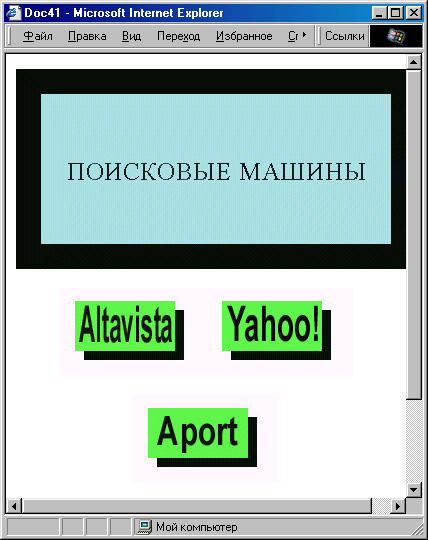
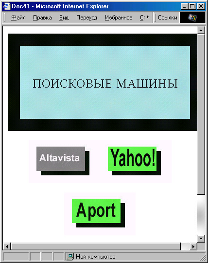

|
|
|
7.5. Динамическое изменение графических элементов веб-страницы
Итак, в предыдущем разделе мы узнали, каким образом можно произвольно изменять любые текстовые элементы на веб-странице. А как быть, если надо динамически изменить не текст, а графику? Допустим, мы создали несколько красивых графических кнопок для гиперссылок и хотим, чтобы при наведении мыши соответствующая кнопка изменяла свой вид (напри мер, одсвечивалась), по аналогии с текстовыми гиперссылками при наличии определенного псевдокласса A:hover.
Подготовка графических кнопок
Для примера модифицируем страницу со ссылками на поисковые машины, которую мы создали в главе 2. Сначала проведем некоторую подготовительную работу, а именно: нарисуем графические кнопки для гиперссылок, а также фоновый рисунок для всей страницы. Затем определим стиль для элемента <BODY>: BODY { text-align: center; background: url("Zmages/back7.jpg") ; }
Поскольку все содержимое нашей страницы будет размещено по ее центру, мы определили стилевое свойство text-align: center прямо для основного эле мента страницы < BODY>. Теперь, чтобы заголовок и пояснительный текс'1 не “терялись” на достаточно пестром фоне, определим для них “бордюры ” и фоновый цвет: H1 { border-color: #0063CE;
border-style: groover- border-width: thick;
padding: 5px; background-color: #ACEDFF; width: 16em;
} SPAN { border-color: #FF63CE; border-style: ridge;
border-width: medium; padding: 5px; background-color: #FCEDFF; width: 60%; font-size: 20px;
}
Имеется в виду, что мы заключим пояснительный текст в тег <SPAN> . Tenepь напишем основной текст страницы:
<BODY>
<Н1>ПОИСКОВЫЕ МАШИНЫ</Н1>
<SPAN>Если вы ищете в Интернате какую-либо информацию, вам помогут следующие сайты:</SPAN>
<BR><BR>
<А HREF="http://www.altavista.corn" TARGET="_blank"> <IMG SRC="Images/altavista.Jpg" WIDTH="192" HEIGHT="40" BORDER="0" ALT="Altavista"></A><BR>
<A HREF="http://www. yahoo, corn" TARGET="_blank"> <IMG SRC="Images/yahoo.jpg" WIDTH="147" HEIGHT="40" BORDER="0" ALT="Yahoo!"></A><BR>
<A HREF="http://www.aport.ru" TARGET="_blank"> <IMG SRC="Images/aport.jpg" WIDTH="135" HEIGHT="40" BORDER="0" ALT="AnopT"></A><BR>
<A HREF="http://www.yandex.ru" TARGET="_blank"> <IMG SRC="Images/yandex.jpg" WIDTH="129" HEIGHT="40" BORDER="0" ALT="Яndex"></A>
видите, пока что ничего нового. Результат показан на рис. 7.13. Согласясь, что это выглядит немного лучше, чем предыдущий вариант. Однако теперь нужно сделать то, ради чего мы все это начали — подсветить кнопки гиперссылок при наведении на них мыши.

Рис. 7.13. Страница графически оформленных гиперссылок
во-первых, придется сделать еще четыре рисунка — по одному для каж-дой подсвеченной кнопки. Ведь на самом деле, чтобы кнопка изменила свой цвет, нужно просто-напросто подставить на то же место рисунок с кнопкой другого цвета. Так что для начала придется открыть графичес-кий редактор и изменить вид кнопок.
Управление “подсветкой” кнопок
Теперь назначим обработчику событий onMouseOver смену изображения. Собственно говоря, для этого нужно всего лишь изменить атрибут SRC= тегa <IMG>:
<IMG SRC="'Images/altavista.jpg" WIDTH="192" HEIGHT="40" BORDER="0" ALT="Altavista" onMouseOver="this.src='Images/altavista2.jpg'">
Теперь при наведении указателя мыши на кнопку Altavista вид кнопки изме нится, так как будет загружен другой рисунок. Точно таким же способом Iнужно сменить изображение обратно при выведении указателя мыши за пределы кнопки:
<IMG SRC="Images/altavista.jpg" WIDTH="192" HEIGHT="40" BORDER=0" ALT="Altavista" onMouseOver="this.src='Images/altavista2.jpg'" onMouseOut="this.src='Images/altavista.jpg'">
Вот теперь, наконец, мы добились, чего хотели, но только для одной кнопки: при наведении на нее указателя мыши она изменяет свой вид (рис. 7.14), а при выведении указателя восстанавливает прежний вид .

Рис. 7.14. На этой странице графические гиперссылки подсвечиваются при наведении на них указателя мыши
Можно, конечно, написать такую же конструкцию и для остальных трех кнопок. Однако, давайте реализуем более изящное решение: напишем одну функцию, которая будет менять файл рисунка для всех тегов <IMG>, имеющихся на странице. Точнее, функций будет две: одна для событии onMouseOver, а другая — для onMouseOut. Воспользуемся тем, что файлы рисунков “подсвеченных” кнопок имеют те же имена, что и файлы рисунков обычных кнопок, плюс цифра 2 (например: altavista.jpg — altavista2.jpg). Пусть первая функция, реагирующая на наведение мыши, просто встав ляет двойку в нужное место:
function changel() { if (window.event.srcElement.tagName="IMG")
window.event.srcElement.src= window.event.srcElement.src.substring(0, window.event.srcElement.src.length4)+"2"+ window.event.srcElement.src.substring (window.event.srcElement.src.length-4, window.event.srcElement.src.length) ;
}
Как видите, эта функция сначала проверяет, на какой объект, собственно, наведен указатель мыши, и если это элемент <IMG> , то в нужное место значения его атрибута SRC= вставляется цифра 2, а если это какой-нибудь другой элемент, то функция просто ничего не делает. Вроде все правильно, однако слишком громоздко — так сразу и не разберешься, что эта функция делает, да и при вводе таких строк легко ошибиться и потом долго и мучительно искать, почему выдаются сообщения об ошибках. Сократим этот год, присвоив значение window.event.srcElement временной переменной:
function changel() { var a=window.event.srcElement; if (a.tagName=="IMG")
a.src=a.src.substring(0, a.src.length-4)+"2"+ a.src.substring(a.src.length-4, a.src.length);
}
Вот это совсем другое дело — смотрится гораздо прозрачнее, а функционирует точно так же.
Теперь напишем аналогичную функцию, удаляющую двойку из значения атрибута
SRC=function change2() { var a=window.event.srcElement; if (a.tagName="IMG")
a.src=a.src.substring(0, a.src.length-5)+ a.src.substring(a.src.length-4, a.src.length);
}
Вам осталось только назначить обработчики событий. Поскольку мы не нем, для каких конкретно элементов их назначать и сколько, назначим объекту document (обратите внимание, что внутри функций не зря про наводится проверка на имя тега):
document.onmouseover=changel ;
document.onmouseout=change2;
последние две строки также должны находиться в блоке <SCRIPT> . Обратите внимание на отсутствие круглых скобок после имен функций! (Если скобки поставить, то это приведет к немедленному вызову функций, а нам можно только связать их имена с соответствующими событиями.) Теперь можно добавлять сколько угодно кнопок гиперссылок на эту страницу, загромождая ее большим количеством повторяющегося кода.
Предварительная загрузка графических объектов
Однако это еще не все. Представьте себе, что пользователь навел мышь на кнопку-гиперссылку. Что должно произойти? Естественно, замена рисунка. Но откуда броузер возьмет новый рисунок? Начнет загружать через Интернет, поскольку до этого новый рисунок не был загружен в память. В результате на некоторое время отобразится пустой прямоугольник, и весь эффект пропадет!
Чтобы этого избежать, придется написать код для предварительной загрузки в память всех картинок. Это можно сделать при помощи объявления объектов
типа Image:
var imgl=new Image(); imgl.src='Images/altavista.jpg'; var img2=new Image(); img2.src='Images/altavista2. jpg';
и так далее. Теперь все графические объекты будут загружены в память заранее, и при наведении мыши на кнопку-гиперссылку смена рисунка произойдет практически мгновенно, что и даст требуемый эффект.
Посмотрим, что у нас получилось в целом.
<!DOCTYPE HTML PUBLIC "-//W3C//DTD HTML 4.0 Transitional//EN">
<HTML>
<HEAD>
<TITLE>Страницца гиперссылок</TITLE>
<STYLE TYPE="text/css">
BODY { text-align: center- background: url("Images/back?.jpg") ;
} H1 { border-color: #0063CE;
border-style: groove;
border-width: thick;
padding: 5px; background-color:
#ACEDFF; width: 16em;
} SPAN { border-color:
#FF63CE;
border-style: ridge;
border-width: medium; padding: 5px;
padding: 5px;
background-color:
#FCEDFF;
width: 60%;
font-size: 20px;
} IMG { margin: 7px; }
-->
</STYLE>
<SCRIPT LANGUAGE""JavaScript" TYPE="text/javascript">
var imgl=new Image() imgl.src='Images/altavista.jpg';
var img2=new Image() img2.src='Images/altavista2.jpg'; var img3=new Image() img3.src='Images/yahoo.jpg'; var img4=new Image() img4.src='Images/yahoo2.jpg'; var img5=new Image() img5.src='Images/yandex.jpg'; var img6=new Image() img6.src='Images/yandex2.jpg'; var img7=new Image() img7.src='Images/aport.jpg'; var img8=new Image() img8.src='Images/aport2.jpg';
function changel() { var a=window.event.srcElement; if (a.tagName=="IMG")
a.src=a.src.substring(0,a.sre.length-4)+"2"+ a.src.substring(a.sre.length-4, a.src.length);
} function change2() { var a=window.event.srcElement; if (a.tagName=="IMG")
a.src=a.src.substring(0,a.src.length-5) + a.src.substring(a.src.length-4, a.src.length) ;
} document.onmouseover=changel; document.onmouseout=change2 ; //--> </SCRIPT> </HEAD>
<ВОDY>
<Н1>ПОИСКОВЫЕ МАШИНЫ</Н1>
<SPAN>Если вы ищете в Интернете какую-либо информацию, вам помогут следующие сайты::<SPAN>
<BR><BR>
<А HREF="http://www.altavista.corn" TARGET="_blank"> <IMG SRC="Images/altavista.jpg" WIDTH="192" HEIGHT="40" BORDER="0" ALT="Altavista"></A><BR>
<A HREF="http://www.yahoo.corn" TARGET="_blank">
<IMG SRC="Images/yahoo.jpg" WIDTH="147" HEIGHT="40" BORDER="0" ALT="Yahoo! "></A><BR>
<A HREF="http://www.aport.ru" TARGET="_blank">
<IMG SRC="Images/aport.jpg" WIDTH="135" HEIGHT="40" BORDER="0" ALT="AnopT"></A><BR>
<A HREF="http://www.yandex.ru" TARGET="_blank">
<IMG SRC="Images/yandex.jpg" WIDTH="129" HEIGHT="40" BORDER="0" ALT="Яndex"></A>
</BODY>
</HTML>
Можно, разумеется, придумать и другие средства взаимодействия с графическими элементами. В главе 6, например, мы создали картинку с дина-мически изменяющимся размером. В разделе 7.2 мы передвигали картинки с помощью мыши. Вы можете также попробовать передвигать картинки без участия пользователя (что создаст эффект анимации) или изменят). их стилевое свойство filter.
|
|
|